| [ Team LiB ] |
|
8.10 Improved Disturbance Rejection DesignWe can achieve improved disturbance rejection by specifying a different IMC filter design procedure. We perform the same factorization of the process model as before. The difference is in the selection of the IMC filter transfer function. Here, rather than using a filter of the form 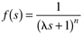 we use a filter with the form 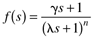 where g is selected to achieve good disturbance rejection. In practice, g will be selected to cancel a slow disturbance time constant. Consider the closed-loop transfer function for disturbance rejection 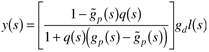 In the case of a perfect model, this results in 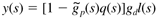 The controller, using the new filter form, is 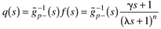 so the output response is 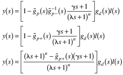 Although it is hard to tell from this general expression, g should be selected to cancel the slow time constant associated with gd(s). This is shown by way of an example for a first-order process. Example 8.8: First-Order Process, Improved Disturbance Rejection DesignFor a first-order process model, 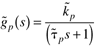 The IMC controller, using the proposed filter design, is 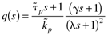 Assuming a perfect model and load disturbance transfer function equal to the process transfer function, Equation (8.52) becomes 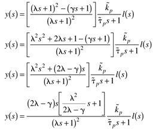 If we select l2/(2l - g) to cancel the process model time constant, 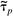,we find 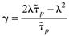 Numerical ExampleHere we consider again the first-order process model transfer function from Example 8.7, 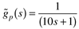 and assume that the disturbance transfer function is equal to the process transfer function (this is equivalent to assuming that the load disturbance occurs at the process input). 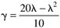 which leads to the closed-loop results for a unit step disturbance, shown in Figure 8-18. Figure 8-18. Improved disturbance response for Example 8.8, with l = 2 min. A comparison with the standard IMC filter design.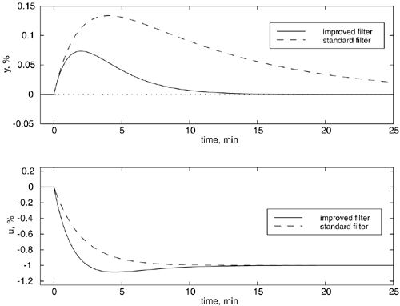 It should be noted that the improved disturbance rejection design does not lead to detrimental performance for setpoint changes. In Figure 8-19, the new filter design also leads to faster performing setpoint responses. The major disadvantage is the increased manipulated variable action. In practice, the l value should be detuned for improved robustness. Figure 8-19. Setpoint response for Example 8.8, with l = 2 min. A comparison of design for improved disturbance rejection with the standard IMC filter design.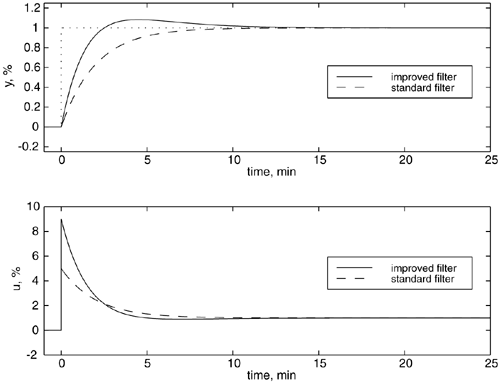 |
| [ Team LiB ] |
|